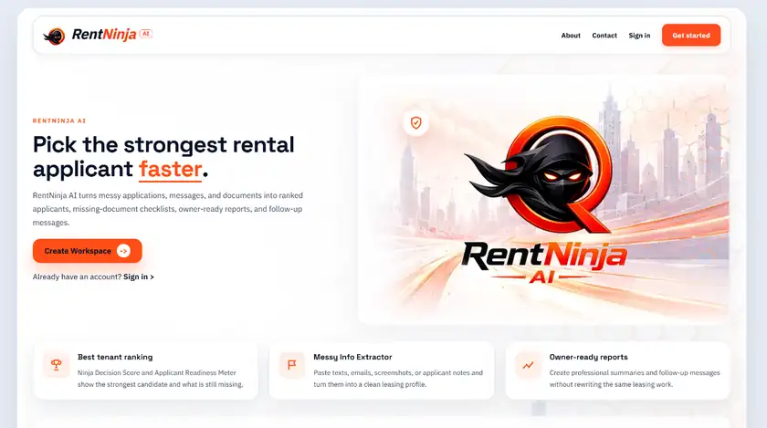
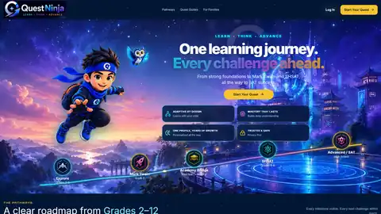

Software & AI Projects.
Published software and active engineering work by Sanjai Syamaprasad. Each project is labeled by current status so live products are clearly separated from development work.
RentNinja
A structured tenant-screening workspace for applicant review, scoring, notes, workflow status, and AI-assisted intake.

LiveActive product work.
These projects have detailed case studies and engineering evidence but are not presented as published products.

In developmentQuestNinja
An adaptive learning platform with structured pathways, mastery tracking, assessments, and AI-assisted practice.
ShiftNinja AI
An application direction for scheduling, coordination, and practical workflow automation.
Read the architecture behind the work.
Technical notes explain the system boundaries, workflow decisions, AI integration patterns, and reliability principles behind selected projects.
Read the RentNinja architecture walkthrough →Code, case studies, and technical writing.
The strongest public work is the work that can be verified.
My project pages focus on a small set of software products and technical decisions rather than a long catalog of experiments. Public source code is available through GitHub, while this site provides the context behind the architecture and product choices.